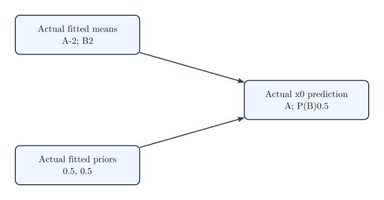
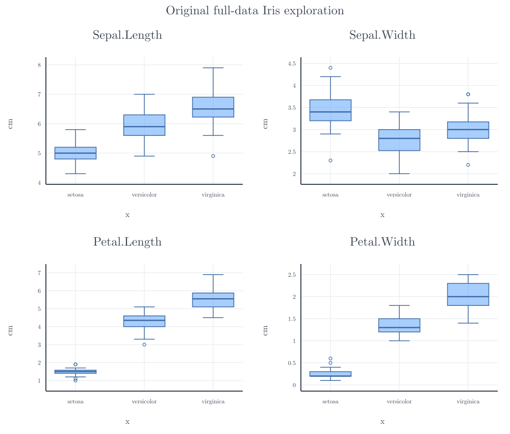
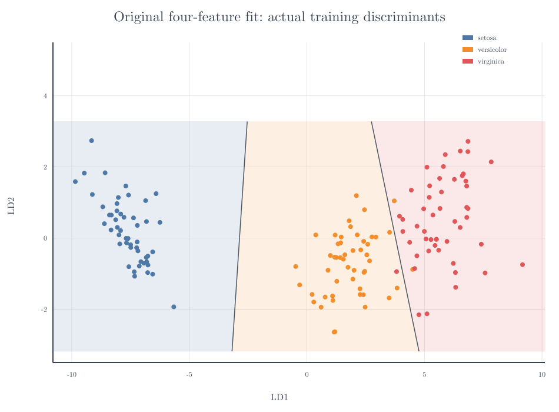
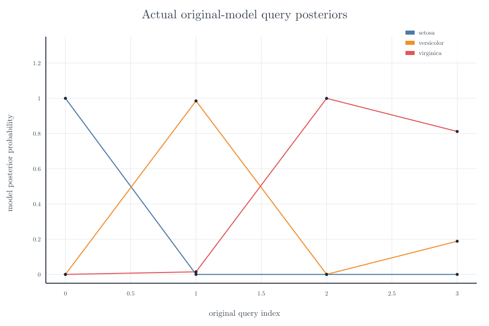
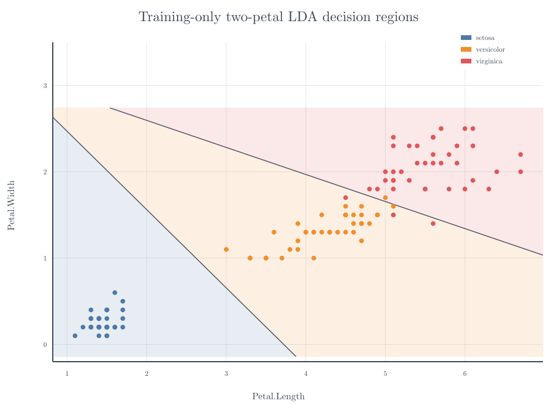

Iris linear discriminant analysis
Abstract
Linear discriminant analysis compares classes through a shared within-class covariance. We derive its affine Bayes scores with a tiny checkable fit, retain the original four-measurement Iris analysis and new-flower predictions, and add a separate two-petal model whose genuine two-dimensional decision regions are scored on held-out rows. Training accuracy, discriminant trace proportions and posterior probabilities answer different questions.
Shared covariance gives affine scores
Assume class k has Gaussian predictor distribution with mean mu_k, common positive-definite covariance Sigma and prior pi_k. Dropping the common quadratic term from log(pi_k*f_k(x)) leaves
The fitted pooled covariance is W/(n−K), where W sums each row’s deviations from its own class mean. This is the unbiased within-class estimate, not W/n. The native model solves with a Cholesky factor and caches precision-weighted means. A common covariance gives affine score differences, so pairwise boundaries are lines in two predictors. Posterior confidence is conditional on the model assumptions and priors; it is not a calibration certificate.
Tiny symmetric fit
Use one predictor and class A values−3,−2,−1, class B values1,2,3. Actual means are−2 and2; pooled variance is1 and equal priors give delta_B−delta_A=4*x. At x0 the posterior tie is broken by the alphabetical first class. Every displayed probability below comes from the native fitted model.
#include <dm/dm.hpp>
int main() {
std::filesystem::create_directories("build");
dm::dstruct::DataFrame d;
d.add_column("x", std::vector<double>{-3, -2, -1, 1, 2, 3});
d.add_column("class", std::vector<std::string>{"A", "A", "A", "B", "B", "B"});
dm::stats::LDA m(d, "class ~ x");
dm::dstruct::DataFrame q;
q.add_column("x", std::vector<double>{-1, 0, 1});
auto p = m.predict_detail(q);
std::print("{}\n| actual query x | actual selected class | actual P(A) | actual P(B) |\n| ---: | --- | " "---: | ---: |\n",
m.group_means_frame().to_md());
for (std::size_t i = 0; i < 3; ++i)
std::print("| {} | {} | {:.12f} | {:.12f} |\n", int(i) - 1,
p.class_label[i], p.posterior[i][0], p.posterior[i][1]);
dm::graphics::Diagram g;
g.node("means", {0, 2},
std::format("Actual fitted means\nA{}; B{}", m.group_means()[0][0],
m.group_means()[1][0])).node("prior", {0, -2},
std::format(
"Actual fitted priors\n{}, {}",
m.priors()[0], m.priors()[1])).node("tie", {7, 0}, std::format("Actual x0 prediction\n{}; P(B){}", p.class_label[1], p.posterior[1][1])).edge("means", "tie").edge("prior", "tie").save_svg("build/lda_tiny.svg");
}| class | x |
|---|---|
| A | -2 |
| B | 2 |
| actual query x | actual selected class | actual P(A) | actual P(B) |
|---|---|---|---|
| -1 | A | 0.982013790038 | 0.017986209962 |
| 0 | A | 0.500000000000 | 0.500000000000 |
| 1 | B | 0.017986209962 | 0.982013790038 |

Iris measurements before fitting
The native embedded Iris frame contains150 flowers and four measurements in centimetres, with50 rows per species. Retain the original per-species boxplots and petal scatter as descriptive full-data exploration. These plots are not held-out scoring evidence. Source row order and dataset provenance remain those of dm::datasets::iris(); no external preprocessing or substitute dataset is introduced.
#include <dm/dm.hpp>
int main() {
std::filesystem::create_directories("build");
auto d = dm::datasets::iris();
std::vector<std::string> classes{"setosa", "versicolor", "virginica"};
std::print("Native Iris: {} rows, {} columns.\n\n{}\n", d.nrows(),
d.ncols(), d.head(6).to_md());
auto layout = dm::graphics::RLayout::create(2, 2);
for (const std::string name : {"Sepal.Length", "Sepal.Width",
"Petal.Length", "Petal.Width"}) {
std::vector<std::vector<double>> groups;
for (auto &c : classes) {
auto part = d.filter([&](const dm::dstruct::DataFrame::Row & r) {
return r.get_string("Species") == c;
});
groups.push_back(part.numeric_column(name).values());
}
auto p = dm::graphics::RPlot::boxplot(groups, classes, {96, 165, 250});
p.title(name).y_label("cm");
layout.add(p);
}
layout.size(1000, 850).title("Original full-data Iris exploration").fit_panels().save_svg("build/lda_boxplots.svg");
}Native Iris: 150 rows, 5 columns.
| Sepal.Length | Sepal.Width | Petal.Length | Petal.Width | Species |
|---|---|---|---|---|
| 5.1 | 3.5 | 1.4 | 0.2 | setosa |
| 4.9 | 3.0 | 1.4 | 0.2 | setosa |
| 4.7 | 3.2 | 1.3 | 0.2 | setosa |
| 4.6 | 3.1 | 1.5 | 0.2 | setosa |
| 5.0 | 3.6 | 1.4 | 0.2 | setosa |
| 5.4 | 3.9 | 1.7 | 0.4 | setosa |

Original four-feature fitted discriminants
Retain Species~Sepal.Length+Sepal.Width+Petal.Length+Petal.Width, all150 rows and empirical priors. The native summary and confusion frame describe actual resubstitution performance, not an unbiased prediction estimate. Discriminant directions solve B*v=lambda*W*v and are normalized against within-class covariance; positive eigenvalue trace proportions describe separation in that criterion, not fractions of predictive accuracy or universally comparable feature importance. With three classes there are at most two axes, so the displayed LD1/LD2 classifier regions carry this fitted model’s class contrasts. This is a transformed four-feature plot, explicitly distinct from a two-original-predictor decision plot.
#include <dm/dm.hpp>
int main() {
std::filesystem::create_directories("build");
dm::stats::LDA model(dm::datasets::iris(),
"Species ~ Sepal.Length + Sepal.Width + Petal.Length + Petal.Width");
std::print("{}\nActual training confusion, actual rows and predicted columns:\n{}\n",
model.to_md(), model.confusion_frame().to_md());
model.plot_discriminants().size(950, 700).y_limits(-3.5, 5.5).title(
"Original four-feature fit: actual training discriminants").save_svg(
"build/lda_original.svg");
}Linear discriminant analysis of Species ~ Sepal.Length + Sepal.Width + Petal.Length + Petal.Width on 150 observations and 3 classes; training accuracy 98.00%.
Prior probabilities of groups:
| setosa | versicolor | virginica |
|---|---|---|
| 0.3333 | 0.3333 | 0.3333 |
Group means:
| class | Sepal.Length | Sepal.Width | Petal.Length | Petal.Width |
|---|---|---|---|---|
| setosa | 5.006 | 3.428 | 1.462 | 0.246 |
| versicolor | 5.936 | 2.770 | 4.260 | 1.326 |
| virginica | 6.588 | 2.974 | 5.552 | 2.026 |
Coefficients of linear discriminants:
| predictor | LD1 | LD2 |
|---|---|---|
| Sepal.Length | -0.8294 | 0.0241 |
| Sepal.Width | -1.5345 | 2.1645 |
| Petal.Length | 2.2012 | -0.9319 |
| Petal.Width | 2.8105 | 2.8392 |
Proportion of trace:
| LD1 | LD2 |
|---|---|
| 0.9912 | 0.0088 |
Actual training confusion, actual rows and predicted columns:
| actual | setosa | versicolor | virginica |
|---|---|---|---|
| setosa | 50 | 0 | 0 |
| versicolor | 0 | 48 | 2 |
| virginica | 0 | 1 | 49 |

Original new flowers and posterior uncertainty
Retain all four original unlabelled query flowers, including the intermediate petal measurements4.8 and1.8. Predictor columns alone suffice for inference; response labels are not required. The native posterior table and score plot show actual predictions from the original complete-data model. No new training, hand-entered probabilities or calibration claim is introduced.
#include <dm/dm.hpp>
int main() {
std::filesystem::create_directories("build");
dm::stats::LDA m(dm::datasets::iris(),
"Species ~ Sepal.Length + Sepal.Width + Petal.Length + Petal.Width");
dm::dstruct::DataFrame q;
q.add_column("Sepal.Length", std::vector<double>{5.1, 6, 6.5, 6.2});
q.add_column("Sepal.Width", std::vector<double>{3.5, 2.7, 3, 2.8});
q.add_column("Petal.Length", std::vector<double>{1.4, 4.5, 5.5, 4.8});
q.add_column("Petal.Width", std::vector<double>{.2, 1.5, 2, 1.8});
auto p = m.predict_detail(q);
std::print("Original query predictors:\n{}\n| actual query index | actual prediction | actual P(setosa) " "| actual P(versicolor) | actual P(virginica) |\n| ---: | --- | ---: | ---: | ---: |\n",
q.to_md());
for (std::size_t i = 0; i < 4; ++i)
std::print("| {} | {} | {:.10f} | {:.10f} | {:.10f} |\n", i,
p.class_label[i], p.posterior[i][0], p.posterior[i][1],
p.posterior[i][2]);
auto plot = dm::graphics::RPlot::create();
for (std::size_t c = 0; c < 3; ++c) {
std::vector<double> x, y;
for (std::size_t i = 0; i < 4; ++i) {
x.push_back(i);
y.push_back(p.posterior[i][c]);
}
plot.line(x, y, m.classes()[c],
c == 0 ? dm::graphics::RGB{78, 121, 167} : c == 1
? dm::graphics::RGB{242, 142, 43}
: dm::graphics::RGB{225, 87, 89}, 2).points(x, y, "",
{31, 41, 55}, 3);
}
plot.y_limits(-.05, 1.35).title("Actual original-model query posteriors").x_label("original query index").y_label("model posterior probability").save_svg("build/lda_queries.svg");
}Original query predictors:
| Sepal.Length | Sepal.Width | Petal.Length | Petal.Width |
|---|---|---|---|
| 5.1 | 3.5 | 1.4 | 0.2 |
| 6.0 | 2.7 | 4.5 | 1.5 |
| 6.5 | 3.0 | 5.5 | 2.0 |
| 6.2 | 2.8 | 4.8 | 1.8 |
| actual query index | actual prediction | actual P(setosa) | actual P(versicolor) | actual P(virginica) |
|---|---|---|---|---|
| 0 | setosa | 1.0000000000 | 0.0000000000 | 0.0000000000 |
| 1 | versicolor | 0.0000000000 | 0.9853729233 | 0.0146270767 |
| 2 | virginica | 0.0000000000 | 0.0003270596 | 0.9996729404 |
| 3 | virginica | 0.0000000000 | 0.1883675434 | 0.8116324566 |

A separate two-petal classifier and held-out score
Use the existing native stratified split with test fraction0.2 and seed42, giving120 training and30 test rows with10 test rows per species. Fit only Petal.Length and Petal.Width on the training partition. The two-dimensional regions below are therefore the complete two-feature model’s true predictor-space classifier, rather than a slice through a four-feature model. Only training rows appear as points in the decision figure. The test partition is used once for the printed confusion counts and accuracy; no hyperparameter selection is performed. One small seeded split is descriptive evidence, not a precise estimate of generalization or a universal ranking of feature choices.
#include <dm/dm.hpp>
int main() {
std::filesystem::create_directories("build");
auto[train, test] =
dm::stats::train_test_split(dm::datasets::iris(), .2, 42, "Species");
dm::stats::LDA m(train, "Species ~ Petal.Length + Petal.Width");
auto p = m.predict(test);
dm::nn::ConfusionMatrix cm(3);
for (std::size_t i = 0; i < test.nrows(); ++i) {
auto truth = test.string_column("Species").at(i);
auto a =
std::find(m.classes().begin(), m.classes().end(), truth) -
m.classes().begin(), b =
std::find(m.classes().begin(), m.classes().end(), p[i]) -
m.classes().begin();
cm.add(a, b);
}
std::print("| actual training rows | actual test rows | actual training accuracy | actual test accuracy " "|\n| ---: | ---: | ---: | ---: |\n| {} | {} | {:.10f} | {:.10f} |\n\n| actual test truth | " "predicted setosa | predicted versicolor | predicted virginica |\n| --- | ---: | ---: | ---: " "|\n",
train.nrows(), test.nrows(), m.training_accuracy(), cm.accuracy());
for (std::size_t c = 0; c < 3; ++c)
std::print("| {} | {} | {} | {} |\n", m.classes()[c], cm.cells()[c][0],
cm.cells()[c][1], cm.cells()[c][2]);
m.plot_decision_regions().size(950, 700).y_limits(-.2, 3.5).title(
"Training-only two-petal LDA decision regions").save_svg(
"build/lda_petals.svg");
}| actual training rows | actual test rows | actual training accuracy | actual test accuracy |
|---|---|---|---|
| 120 | 30 | 0.9666666667 | 0.9333333333 |
| actual test truth | predicted setosa | predicted versicolor | predicted virginica |
|---|---|---|---|
| setosa | 10 | 0 | 0 |
| versicolor | 0 | 9 | 1 |
| virginica | 0 | 1 | 9 |

Contracts and verification
Fitting owns the resolved formula design, class means, precision terms, axes and retained training data. Null response/predictor rows are excluded; inference restores missing-predictor rows as empty labels and empty posterior/score rows. The numerical design must be finite and the pooled scatter positive definite. At least two observed classes, two rows per class and more usable rows than classes plus design columns are required. No shrinkage fallback handles singular covariance. User priors must be positive, match alphabetical class order and sum to1 within1e-6. Predictor-space regions require exactly two resolved predictor columns.
Independent NumPy pooled covariance, Gaussian Bayes scores, posterior
normalization, axis normalization and centered projections verified both the
original full-data four-feature model and the separate held-out two-petal model.
Both complete-data two/four-feature models also matched frozen means,
predictions, posteriors and discriminants exactly. Native tests add an analytic
one-predictor posterior/tie control, independently reconstructed two-by-two
covariance on all30 held-out rows, priors/predictor-only inference checks and
the existing original Iris regression suite. Core numerical behavior is
unchanged. The complete ten-report batch passed77 native CTest cases,39 directly
instrumented ASan/UBSan cases,106 compiled/executed public examples,479/479
scoped definitions and ten representative clangd hovers. All5 complete report
programs executed and all5 native figures were visually reviewed. HTML/Markdown
computed result and identical source/build/export figure bytes passed
verification. Repeatable receipts are retained under
build/mepml-conversion/batch-194-203/.
References
R. A. Fisher(1936), The Use of Multiple Measurements in Taxonomic Problems, Annals of Eugenics7(2),179–188. The fitted implementation combines pooled-covariance discriminant axes with Gaussian Bayes class posteriors; the distributional and calibration assumptions are explicit above. Dataset values and source provenance come from the native embedded Iris loader.